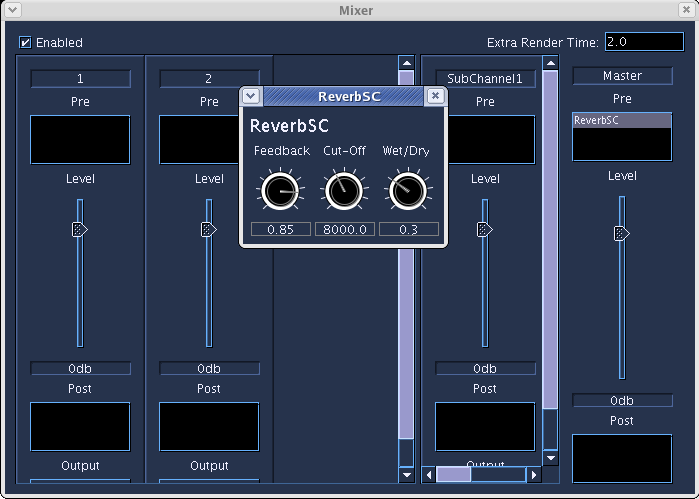
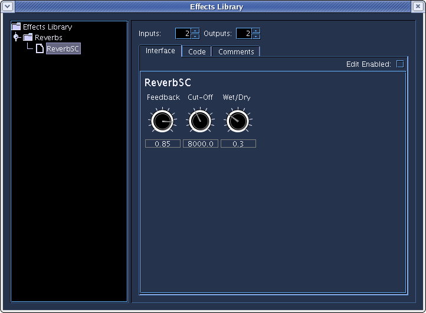
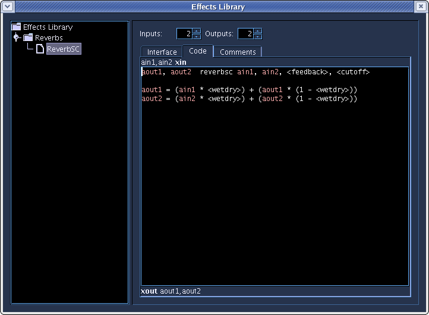

Mixer

The Mixer system in Blue allows for graphically editing levels for instruments, applying pre- and post-fader effects, and routing and mixing of signals through subchannels.
Architecture
The Mixer system has three panel sections:
- Channels
- Channels are auto-created and bound to Instrument ID’s in the Orchestra for a Project. In the Mixer Dialog they are located in the first section on the left within a splitpane that separates them from the SubChannels. Channels can be set to route to either SubChannels or directly to the Master Channel.
- SubChannels
- SubChannels are user-created and are located in the center section of the Mixer Dialog, on the right side of the splitpane. Channels can be set to route to SubChannels, and SubChannels can route into other SubChannels or out to the Master Channel.
- Master Channel
- The Master Channel is located on the right side of the Mixer Dialog. There is only one master Channel per project which all channel and subchannel signals ultimately route through.
Each channel allows for applying effects to the incoming signal either pre- or post-fader.
Using the Mixer
For most MIDI-based music composition environments, the typical user interaction with a Mixer system is that users first create tracks on a timeline, and for each track an audio channel is automatically bound in the mixer. The user then selects an instrument for that track(if it is a MIDI track); MIDI information from the track is routed to the instrument and that instrument generates audio signals. If the instrument happens to be a software synthesizer, the audio signals are then usually taken from the instrument and routed out to the Mixer channel that has been bound to that track.
However, since Blue does not bind music information on a SoundLayer to an instrument (you can have heterogenous note data generated in any soundObject for any number of instruments, a flexibility which allows for soundObjects to be more representative of musical ideas), and nor does it bind SoundLayers to channels, the abstraction of the musical system and the interaction with the Mixer system requires different handling.
In Blue’s Mixer system, Mixer channels are automatically bound to instruments by their instrument ID. Binding to ID and not per-instrument in the Orchestra allows for the case where users have set multiple instruments to the same instrument ID but only having one which is enabled. If you then disable one and then enable another instrument to test out different instruments with the same musical note data, the mixer channel’s settings will be maintained for the new instrument as it is bound by ID.
Channels in themselves can not be created or removed directly by the user, but are automatically added or removed depending on how instruments are added and removed from the project’s orchestra. For cases of when an instrument has an ID and a user wishes to change the ID, if the new ID already exists and a channel is already created, the old channel is removed as long as no other instrument has the old ID. If the new channel ID has no existing mixer channel bound to it and if the channel for the old ID only has one instrument with that ID (the instrument that is changing ID’s), the bound mixer channel is simply reassigned to the new ID and maintains its settings.
Subchannels are added by right-clicking with in the SubChannels area and choosing “Add SubChannel” from the popup menu. To remove a subchannel right-click the channel strip to be removed and select “Remove” from the popup menu.
At the bottom of every Channel and SubChannel strip is an output dropdown box to choose where to route that Chanel’s audio to. For SubChannels, they can only route to other SubChannels which lead to the Master Channel, meaning that there is no feedback allowed (i.e. routing SubChannelA to SubChannelB and then to SubChannelC and that back to SubChannelA is not allowed as it would create a loop).
For the instruments in the orchestra to be able to route out to the Mixer, a special pseudo-opcode must be used for the output of the instrument, entitled “blueMixerOut”. You use blueMixerOut in the same way as the outc opcode. If the Mixer is not enabled in the Dialog, when Blue goes to process the instrument, blueMixerOut will be replaced with outc, thus making the audio of that instrument directly route out to dac or disk, depending on how Csound is set to render. If the Mixer is enabled, blueMixerOut is translated into global variables and the Mixer’s instrument code is generated automatically without the user having to worry about the code details of setting up a Mixer system themselves in Csound code.
There is also a subChannel form of blueMixerOut available that is able to target a subchannel by name. This form is used in the following way:
blueMixerOut "subChannelName", asig1, asig2 [, asig3...]Using this form, the asig signals will be mixed into the subChannel given by name. This form is available to use within Instruments but is also very useful to use when working Sound SoundObjects and AudioFile SoundObjects, which do not have channels created for them. This way, you can route the output of an AudioFile to a named subchannel and apply Effects, etc.
Effects
Effects in Blue are implemented as User-Defined Opcodes, and understanding of how User-Defined Opcodes work in Csound is recommended before creating Effects. Understanding how UDO’s work however is not necessary if one simply wants to use Effects.
The workflow for using Effects with your Mixer channels is:
Populate your Effects Library by either creating effects or importing them from BlueShare.
In the Mixer, choose either the pre-fader or post-fader effects bin to add effects. Right click on the bins to open up a popup menu that shows effects that are currently in your library from which to choose to insert.
Configure your effect by double-clicking it in the effects bin. Double-clicking the effect will open up a dialog that shows the effect’s graphical user interface.
Effects Library

Effects are created and managed in your Effects Library, which is accessible from the Tools menu. The Effects Library is program wide, so any Effect in the library will be accessible to use from any project you are working on.
In the picture above, you will see the library where one can create Effects as well as organize them into groups. The organization into groups within the library will be reflected in the Effects popup that appears when the user is looking to add Effects to their Mixer channels.
To add a group or new Effect, right click on any node and choose the option from the popup. The popup will also allow you to cut/copy/paste groups or Effects which is useful when reorganizing or when creating new Effects based on older ones.
Once an Effect or group is added, you can edit the the name by double-clicking the node in the tree. Selecting an effect by clicking it once will populate the editor on the right. The picture above shows the User Interface editor for the Effect. Like other BlueSynthBuilder-based editors in Blue, clicking Edit Enabled will allow you to move between to edit modes, one in which you can add, remove, and move around widgets, and another where you can interact with the widgets (useful for setting an initial value for the Effect.)

In the code editor for the Effect, one sees that the xin and xout lines of the User-Defined opcode display according the number of in and out audio signals the Effect will support. The names of the signals are hard-coded, which makes it easier for others to know exactly what the incoming and outgoing signals will be should they look at your code.
Code for the Effect should follow the same principles as User-Defined Opcodes(i.e. one can add a setksmps line at the top of the code area). Values from the widgets follow the same principles as BlueSynthBuilder, and code completion for opcodes (ctrl-space) and BSB widgets (ctrl-shift-space) work within the code editor.
Blue currently expects Effects to have nchnls number of channels in and out where nchnls is the number set by the project.
Other Notes
- The Extra Render Time option in the Mixer dialog allows the user to add extra time to the end of the score. This is useful to allow time for Effects which may have time delay (i.e. 3-second long reverb) to have time enough for processing, as well as simply to add time at the end of a piece.
Sends
Besides effects, users are also able to put in Sends into the pre- and post-fader Effects bins. Sends will output the signal from that point in the channel’s signal chain to a selected SubChannel. As with the output channels, Sends can only feed-forward down the chain to the Master Out and can not be made to create a feedback loop. Users are able to set the channel to send to as well as the amount to send. This send amount is also able to be Automated, just as the Effects are.
Randomization
Widget values are able to be randomized in the same way as in the BlueSynthBuilder, and is available in the usage mode when working with Effects in the Effects Library or when using Effects from the mixer. Please further information, please see the documentation for BlueSynthBuilder Widget Randomization.
Code Generation Optimization
Blue’s mixer system optimizes when generated code for Csound to use. When compiling down to ORC code, Blue checks all signal paths to see if any path will result in unused audio and if so, will optimize out any code that is along that path. The rules for optimization are as follows:
If channel does not generate signal to channel output (if no automation for level fader and fader == -96.0f), only generate code up to last send in preFader effects chain
When processing Sends, checks down the graph to see if send signal will make it to the Master output or not, checking both down graph of output channels as well as sends for each channel. If not, does not generate output for Send.
If channel does not have channel output and no valid prefader sends, do not generate anything for channel.
If SubChannel has no signal inputs (whether it’s from another Channel’s out channel, a Send, or dependency from code that uses the subChannel form of blueMixerOut), do not generate anything for channel.